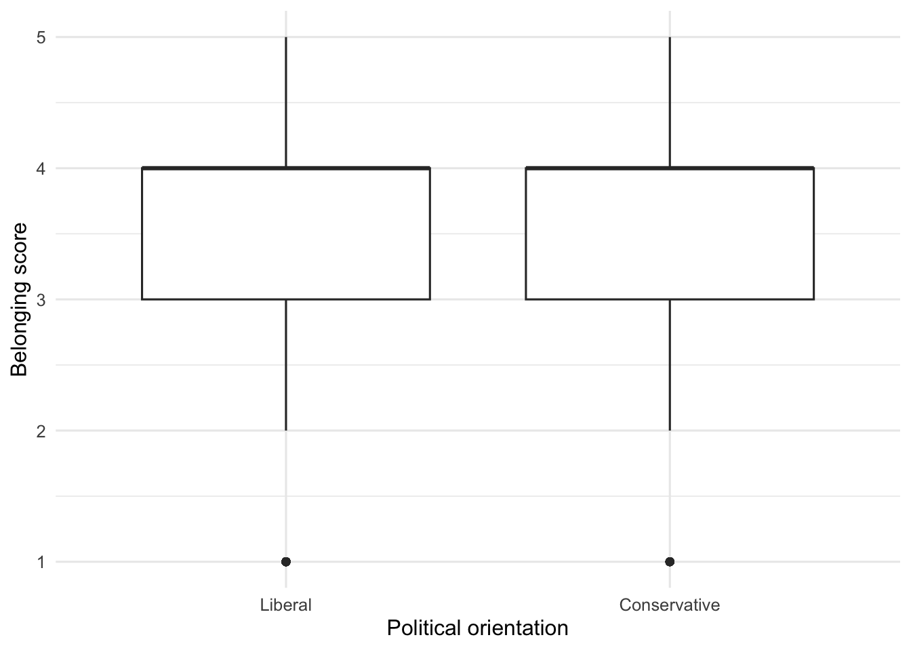

source("scripts/_setup.R")Chapter 10: Two-Sample Designs
Independent-samples and paired-samples t tests
Compare two means from different groups or from the same participants.
Chapter 10 of Exploring Statistics introduces two-sample designs. Sometimes two means come from different groups of people; other times the same people supply both scores. That distinction determines which t test we use and what assumptions we check.
Learning Goals
By the end of this chapter, you should be able to:
- identify the independent and dependent variables in a two-sample question;
- distinguish independent-samples from paired-samples designs;
- examine normality and homogeneity of variance as appropriate;
- conduct and interpret both types of t test;
- calculate Cohen’s d for both designs; and
- report the means, standard deviations, t, p, Cohen’s d, and confidence interval.
Research Questions
- Do students with conservative and liberal political views differ in feelings of belonging?
- Do participants differ in how strongly they value the American Dream and how strongly they believe they can achieve it?
- Do participants differ in their ratings of emerging adulthood as a time for exploration and identity formation?
Research Question 1: Political Views and Belonging
Belonging is measured from 1, not at all, to 5, very much. PoliticsDichotomous places participants into liberal and conservative groups. Because the scores come from different groups of people, we will conduct an independent-samples t test.
Get Ready
Open 10-two-sample-designs.R from the scripts folder. Run the shared setup line first, and then run one section at a time.
Review the variables in Understanding EAMMi2. Give the political-view codes readable labels.
eammi <- eammi |>
mutate(
PoliticsDichotomous = factor(
PoliticsDichotomous,
levels = c(1, 2),
labels = c("Liberal", "Conservative")
)
)Predict
Before running the analysis:
- Identify the independent and dependent variables.
- Write the null and alternative hypotheses in words and notation.
- Predict which group will have the higher mean, or predict no meaningful difference.
- State what you would need to inspect before using Student’s independent-samples t test.
Run
Start with a table and a graph. These are familiar code patterns, so focus on what they reveal about the assumptions and the direction of any difference.
belonging_data <- eammi |>
drop_na(PoliticsDichotomous, Belonging)
belonging_summary <- belonging_data |>
group_by(PoliticsDichotomous) |>
summarise(
N = n(),
Mean = mean(Belonging),
Median = median(Belonging),
SD = sd(Belonging),
Skewness = sample_skewness(Belonging)
)
belonging_summary# A tibble: 2 × 6
PoliticsDichotomous N Mean Median SD Skewness
<fct> <int> <dbl> <dbl> <dbl> <dbl>
1 Liberal 897 3.47 4 1.00 -0.566
2 Conservative 438 3.75 4 1.04 -0.778belonging_data |>
ggplot(aes(x = PoliticsDichotomous, y = Belonging)) +
geom_boxplot() +
labs(
x = "Political orientation",
y = "Belonging score"
)
Two important assumptions must be considered before conducting Student’s independent-samples t test. First, the dependent variable should be close enough to normally distributed within each group. Second, the groups should have similar variances.
Use the Shapiro-Wilk test to check normality within each group.
liberal_belonging <- belonging_data |>
filter(PoliticsDichotomous == "Liberal") |>
pull(Belonging)
conservative_belonging <- belonging_data |>
filter(PoliticsDichotomous == "Conservative") |>
pull(Belonging)
shapiro.test(liberal_belonging)
Shapiro-Wilk normality test
data: liberal_belonging
W = 0.88271, p-value < 2.2e-16shapiro.test(conservative_belonging)
Shapiro-Wilk normality test
data: conservative_belonging
W = 0.86074, p-value < 2.2e-16pull() takes one variable from a data frame so that a function can use its values. shapiro.test() tests the null hypothesis that the scores came from a normal distribution. A p value below .05 provides evidence that the distribution differs from normal.
Both Shapiro-Wilk tests are significant, so the normality assumption is not met. However, tests of normality are sensitive to small departures from normality in large samples. Belonging contains only valid scores from 1 to 5, and the skewness values are below 2.00 in both groups. Setting valid endpoint scores aside would be hard to justify. For this teaching analysis, we will keep all valid scores, proceed with the test, and report the assumption result.
Now examine whether the groups have similar variance.
belonging_variance_test <- var.test(
Belonging ~ PoliticsDichotomous,
data = belonging_data
)
belonging_variance_test
F test to compare two variances
data: Belonging by PoliticsDichotomous
F = 0.92717, num df = 896, denom df = 437, p-value = 0.3527
alternative hypothesis: true ratio of variances is not equal to 1
95 percent confidence interval:
0.7867828 1.0876209
sample estimates:
ratio of variances
0.9271695 var.test() conducts an F test comparing the two group variances. Focus on the p value. A value above .05 means the output does not provide evidence that the variances differ. Here, p is greater than .05, so we will treat the variances as similar enough for Student’s t test.
The formula repeats the pattern introduced in Chapter 6: outcome ~ predictor. When the predictor identifies groups, you can read it as outcome ~ group.
Run the independent-samples t test.
belonging_t_test <- t.test(
Belonging ~ PoliticsDichotomous,
data = belonging_data,
var.equal = TRUE
)
belonging_t_test
Two Sample t-test
data: Belonging by PoliticsDichotomous
t = -4.6974, df = 1333, p-value = 2.908e-06
alternative hypothesis: true difference in means between group Liberal and group Conservative is not equal to 0
95 percent confidence interval:
-0.3948206 -0.1621959
sample estimates:
mean in group Liberal mean in group Conservative
3.474916 3.753425 var.equal = TRUE requests Student’s independent-samples t test.
Investigate
Read the output in this order:
- Use the p value to decide whether the group means significantly differ.
- Use the group means to identify the direction of the difference.
- Use the confidence interval to identify a plausible range for the mean difference.
- Check whether the result supports your prediction.
The test shows a significant difference, and conservative participants have the higher mean. The overlapping boxplots remind us that a statistically significant mean difference does not mean the two groups are completely separate.
Calculate Effect Size
Calculate Cohen’s d for the magnitude of the difference.
belonging_group_stats <- eammi |>
drop_na(PoliticsDichotomous, Belonging) |>
group_by(PoliticsDichotomous) |>
summarise(
N = n(),
Mean = mean(Belonging),
SD = sd(Belonging)
)
belonging_d <- independent_cohens_d(
eammi,
Belonging,
PoliticsDichotomous
)
belonging_group_stats# A tibble: 2 × 4
PoliticsDichotomous N Mean SD
<fct> <int> <dbl> <dbl>
1 Liberal 897 3.47 1.00
2 Conservative 438 3.75 1.04belonging_d# A tibble: 1 × 3
MeanDifference PooledSD CohensD
<dbl> <dbl> <dbl>
1 -0.279 1.02 -0.274This reuses independent_cohens_d() from Chapter 5. For independent samples, Cohen’s d divides the mean difference by a pooled standard deviation. The function finds each group’s sample size, mean, and standard deviation and then performs that calculation. To reuse it, change the data frame, outcome, and grouping variable.
Produce
Write an interpretation with the assumption results and decision to proceed, analysis name, both group means and standard deviations, t, degrees of freedom, p, Cohen’s d, its magnitude, and the confidence interval. Describe a difference or association; political views were measured, not assigned.
Research Question 2: American Dream Ratings
Participants rated both the importance of achieving the American Dream (USdream1) and whether they believed they would achieve it (USdream2) on a 1-to-5 scale. Because both scores come from each participant, we will conduct a paired-samples t test.
Predict
Identify the independent and dependent variables, write the hypotheses, and predict which mean will be higher. Explain why the observations are paired rather than independent.
Run
Begin by creating a data frame that contains the paired scores and each participant’s difference score. For a paired-samples t test, the normality assumption applies to these difference scores.
usdream_data <- eammi |>
drop_na(USdream1, USdream2) |>
mutate(
Difference = USdream1 - USdream2
)
usdream_summary <- usdream_data |>
summarise(
N = n(),
USdream1_Mean = mean(USdream1),
USdream1_SD = sd(USdream1),
USdream2_Mean = mean(USdream2),
USdream2_SD = sd(USdream2),
DifferenceSkewness = sample_skewness(Difference)
)
usdream_summary# A tibble: 1 × 6
N USdream1_Mean USdream1_SD USdream2_Mean USdream2_SD DifferenceSkewness
<int> <dbl> <dbl> <dbl> <dbl> <dbl>
1 2063 3.41 1.22 3.57 1.07 -0.282Run the Shapiro-Wilk test on the difference scores.
usdream_normality_test <- shapiro.test(usdream_data$Difference)
usdream_normality_test
Shapiro-Wilk normality test
data: usdream_data$Difference
W = 0.86755, p-value < 2.2e-16The Shapiro-Wilk test is significant, so the difference scores differ statistically from normal. Their skewness is about -0.28, however, which does not indicate severe skew. The two ratings also use a short 1-to-5 scale with no invalid values. For this teaching analysis, we will proceed and report the assumption result.
Run the paired test.
usdream_t_test <- t.test(
usdream_data$USdream1,
usdream_data$USdream2,
paired = TRUE
)
usdream_t_test
Paired t-test
data: usdream_data$USdream1 and usdream_data$USdream2
t = -7.6047, df = 2062, p-value = 4.312e-14
alternative hypothesis: true mean difference is not equal to 0
95 percent confidence interval:
-0.2073099 -0.1223071
sample estimates:
mean difference
-0.1648085 paired = TRUE tells R that the scores in the two variables belong to the same participants. R analyzes each participant’s difference score rather than treating the variables as unrelated groups.
Investigate
Identify which measure has the higher mean. Then use t and p to decide whether the mean difference is statistically significant. Check the confidence interval and determine whether it contains 0.
Calculate Effect Size
Create the difference scores and calculate Cohen’s d.
usdream_difference <- usdream_data$Difference
usdream_d <- cohens_d(
mean(usdream_difference),
sd(usdream_difference)
)
usdream_d[1] -0.1674288For paired samples, Cohen’s d is the mean of the difference scores divided by their standard deviation. The subtraction order affects the sign. Here, negative values mean that attainability ratings tend to be higher than importance ratings.
Produce
Write an interpretation that reports the normality result and decision to proceed, names both ratings, reports both means and standard deviations, and includes t, p, Cohen’s d, its magnitude, and the confidence interval.
Research Question 3: Exploration and Identity Formation
Participants rated emerging adulthood as a time for exploration (Exploration) and identity formation (Identity) on a scale from 1, strongly disagree, to 4, strongly agree.
Predict
Identify the variables, select an independent- or paired-samples test, write the hypotheses, and predict which mean will be higher.
Run
Copy the Research Question 2 code. Replace the American Dream variables with Exploration and Identity, create the participant-level difference scores, and use new object names.
Investigate
Use shapiro.test() to check the difference scores. Then check the means, t, p, confidence interval, and the sign of the difference. Confirm that paired = TRUE remains in your test.
Calculate Effect Size
Create exploration_identity_difference, then use its mean and standard deviation with cohens_d().
Produce
Write a paragraph that answers the research question and reports the normality result, decision to proceed, and required statistics.
Check Your Work
Research Question 1
Independent variable: political orientation. Dependent variable: feelings of belonging.
\[ H_0: \mu_{\text{liberal}} = \mu_{\text{conservative}} \]
\[ H_1: \mu_{\text{liberal}} \neq \mu_{\text{conservative}} \]
An independent-samples t test compared belonging among emerging adults who identified as liberal and conservative. Conservative emerging adults reported significantly greater belonging (M = 3.75, SD = 1.04) than liberal emerging adults (M = 3.47, SD = 1.00), t(1333) = -4.70, p < .001, d = -0.27, 95% CI [-0.39, -0.16]. The magnitude of the difference was small.
The Shapiro-Wilk tests were significant for both groups, so the normality assumption was not met. The skewness values were below 2.00, and all scores were valid values on the 1-to-5 scale, so we proceeded with the analysis. The F test was not significant, so the homogeneity-of-variance assumption was met.
Research Question 2
Independent variable: type of American Dream rating. Dependent variable: American Dream rating.
\[ H_0: \mu_{\text{importance}} = \mu_{\text{attainability}} \]
\[ H_1: \mu_{\text{importance}} \neq \mu_{\text{attainability}} \]
A paired-samples t test compared ratings of the importance and attainability of the American Dream. Emerging adults believed more strongly that they would achieve the American Dream (M = 3.57, SD = 1.07) than that the American Dream was important (M = 3.41, SD = 1.22), t(2062) = -7.60, p < .001, d = -0.17, 95% CI [-0.21, -0.12]. The magnitude of the difference was small.
The Shapiro-Wilk test of the paired difference scores was significant, so the normality assumption was not met. The difference scores were not severely skewed, so we proceeded with the analysis and reported the assumption result.
Research Question 3
The appropriate analysis is a paired-samples t test because each participant supplied both ratings.
exploration_identity_data <- eammi |>
drop_na(Exploration, Identity) |>
mutate(
Difference = Exploration - Identity
)
exploration_identity_summary <- exploration_identity_data |>
summarise(
N = n(),
Exploration_Mean = mean(Exploration),
Exploration_SD = sd(Exploration),
Identity_Mean = mean(Identity),
Identity_SD = sd(Identity),
DifferenceSkewness = sample_skewness(Difference)
)
exploration_identity_normality_test <- shapiro.test(
exploration_identity_data$Difference
)
exploration_identity_t_test <- t.test(
exploration_identity_data$Exploration,
exploration_identity_data$Identity,
paired = TRUE
)
exploration_identity_difference <- exploration_identity_data$Difference
exploration_identity_d <- cohens_d(
mean(exploration_identity_difference),
sd(exploration_identity_difference)
)
exploration_identity_summary# A tibble: 1 × 6
N Exploration_Mean Exploration_SD Identity_Mean Identity_SD
<int> <dbl> <dbl> <dbl> <dbl>
1 2073 3.64 0.493 3.58 0.521
# ℹ 1 more variable: DifferenceSkewness <dbl>exploration_identity_normality_test
Shapiro-Wilk normality test
data: exploration_identity_data$Difference
W = 0.89736, p-value < 2.2e-16exploration_identity_t_test
Paired t-test
data: exploration_identity_data$Exploration and exploration_identity_data$Identity
t = 4.3895, df = 2072, p-value = 1.193e-05
alternative hypothesis: true mean difference is not equal to 0
95 percent confidence interval:
0.02815515 0.07362971
sample estimates:
mean difference
0.05089243 exploration_identity_d[1] 0.09640884Respondents rated emerging adulthood significantly more strongly as a time for exploration (M = 3.64, SD = 0.49) than identity formation (M = 3.58, SD = 0.52), t(2072) = 4.39, p < .001, d = 0.10, 95% CI [0.03, 0.07]. The magnitude of the difference was quite small.
The Shapiro-Wilk test of the paired difference scores was significant, so the normality assumption was not met. The difference scores were approximately symmetric, and we proceeded while keeping the assumption result in mind.
Chapter Takeaway
Use an independent-samples t test when two means come from different groups of people. Use a paired-samples t test when two means come from the same or matched participants.
New R commands and patterns in this chapter:
pull()takes one variable from a data frame for use by a function.shapiro.test()checks whether scores differ significantly from a normal distribution.var.test()conducts an F test comparing two group variances.outcome ~ grouprepeats the formula pattern from Chapter 6 for a group comparison.var.equal = TRUErequests Student’s independent-samples t test.paired = TRUEidentifies related scores in a paired-samples t test.